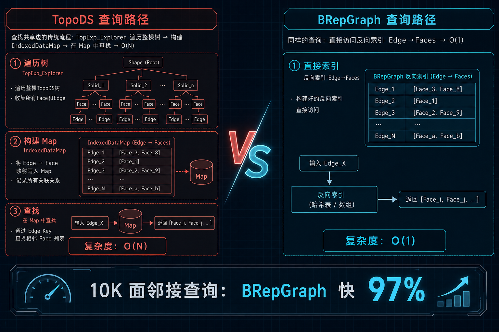
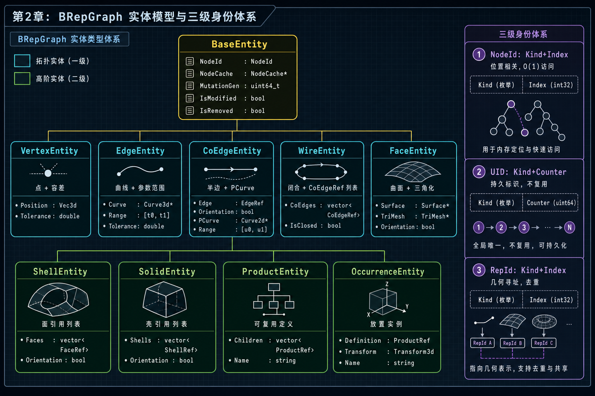
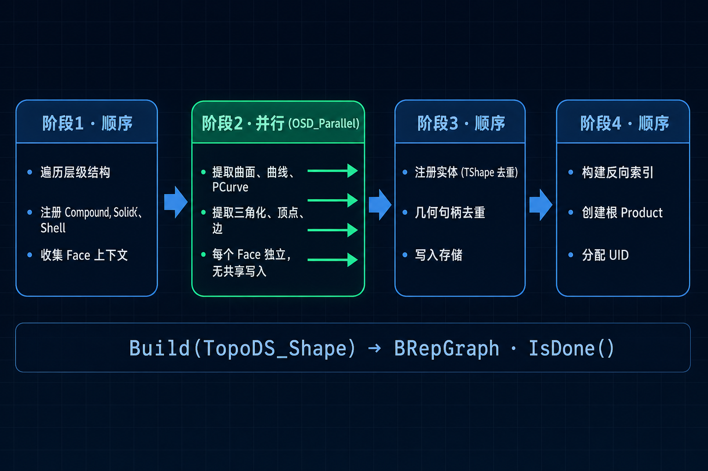
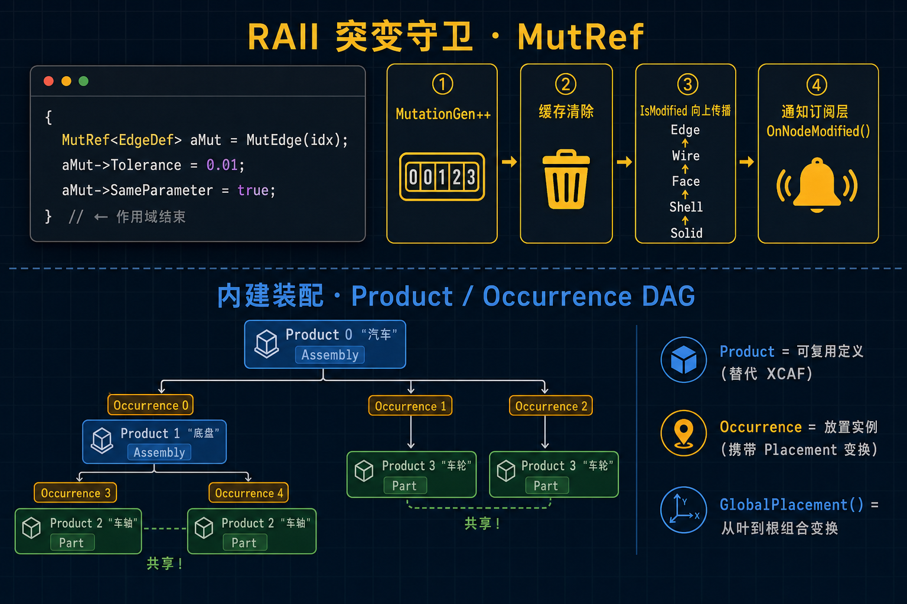
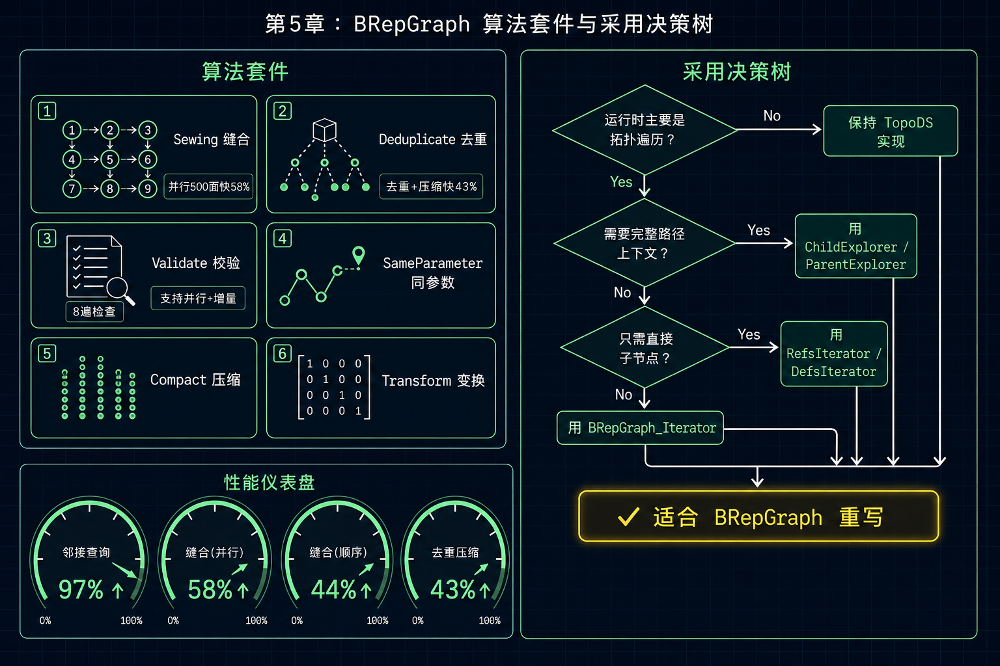

当你的 CAD 算法花 80% 时间在遍历拓扑、构建邻接表，只有 20% 时间在做真正的几何计算——是时候换一种数据结构了。
前置知识：你应该了解 TopoDS_Shape 层次结构（Solid→Shell→Face→Wire→Edge→Vertex）和 BRep_Tool 的基本用法。
假设你正在写一个形状分析算法，需要找出两个面之间的共享边。在当前的 TopoDS 模型中，你需要这样做：
TopTools_IndexedDataMapOfShapeListOfShape aEdgeFaceMap;
TopExp::MapShapesAndAncestors(aShape, TopAbs_EDGE, TopAbs_FACE, aEdgeFaceMap);
// 遍历整个 Map，找到同时属于 FaceA 和 FaceB 的边这段代码的问题不在于写法——而在于 每次查询都要遍历整棵拓扑树来构建 Map，复杂度 O(N)。

| 痛点 | 根因 | 后果 |
|---|---|---|
| 邻接查询慢 | 拓扑是树，不是图。反向查询需要构建临时 Map | O(N) 遍历 + 哈希表开销 |
| 身份基于指针 | TShape 指针相等 = 同一实体。无法序列化 | 不支持持久化标识 |
| PCurve 查找脆弱 | 遍历 CurveRepresentation 列表，匹配 Surface + Location | 对 Location 结构敏感 |
BRepGraph 不替代 TopoDS——它提供一个 索引图视图，从 TopoDS_Shape 构建，可以转换回来。每种拓扑元素在对应向量中恰好存在一次。反向索引提供 O(1) 的上溯导航。

| 身份 | 组成 | 特性 | 适用场景 |
|---|---|---|---|
| NodeId | Kind + Index | 位置相关，O(1) 访问 | 内部遍历和快速引用 |
| UID | Kind + Counter | 持久标识，不复用 | 跨会话追踪、历史记录 |
| RepId | Kind + Index | 几何寻址 | 曲面、曲线去重共享 |

BRepGraph aGraph;
aGraph.Build(BRepPrimAPI_MakeBox(10, 20, 30).Shape());
// 6 面、12 边、8 顶点，全部索引化| 视图 | 用途 | 关键方法 |
|---|---|---|
Defs() | 读实体定义 | NbFaces(), Edge(idx) |
UIDs() | 持久身份 | Of(nodeId), NodeIdFrom(uid) |
Spatial() | 邻接和位置 | FacesOfEdge(idx) |
Shapes() | 重建 TopoDS | Node(nodeId) |
Mut() | 可变定义 | EdgeDef(idx) |
Builder() | 图构建 | AddProduct(root) |
Attrs() | 缓存属性 | Get(nodeId, key) |
Analyze() | 分解分析 | Decompose() |

{
BRepGraph_MutRef<BRepGraph_TopoNode::EdgeDef> aMutEdge = aGraph.MutEdge(anEdgeIdx);
aMutEdge->Tolerance = 0.01;
aMutEdge->SameParameter = true;
}
// 作用域结束时自动：MutationGen++ → 缓存清除 → IsModified 向上传播 → 通知订阅层ProductEntity：可复用的形状定义（替代 XCAF）
OccurrenceEntity：放置实例，携带变换矩阵

| 操作 | vs 基线 |
|---|---|
| 空间邻接查询（10K 面） | 97% 更快 |
| 缝合 500 面（并行） | 58% 更快 |
| 缝合 500 面（顺序） | 44% 更快 |
| 去重 + 压缩（500 副本） | 43% 更快 |
#include <BRepGraph.hxx>
#include <BRepGraph_Tool.hxx>
#include <BRepPrimAPI_MakeBox.hxx>
BRepGraph aGraph;
aGraph.Build(BRepPrimAPI_MakeBox(10, 20, 30).Shape());
const int aNbFaces = aGraph.Defs().NbFaces(); // 6
const int aFaceCount = aGraph.Defs().FaceCountOfEdge(0); // 2
const occ::handle<Geom_Surface>& aSurface =
BRepGraph_Tool::Face::Surface(aGraph, 0);